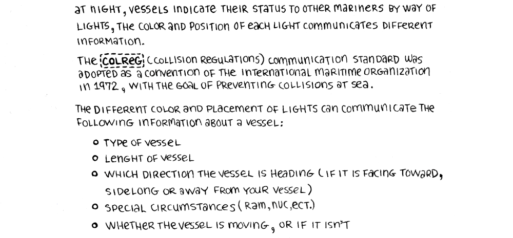
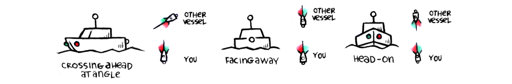
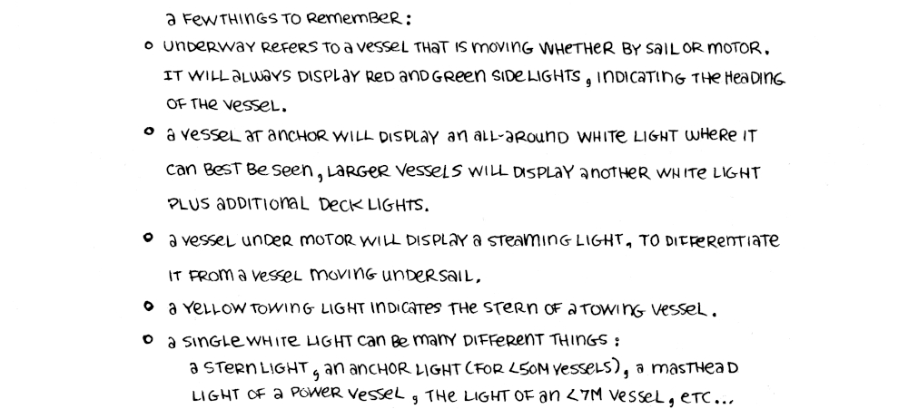
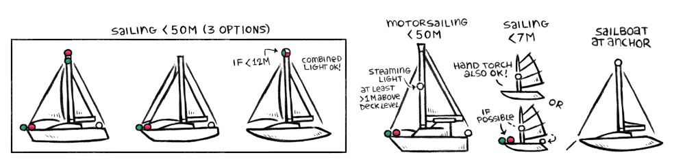
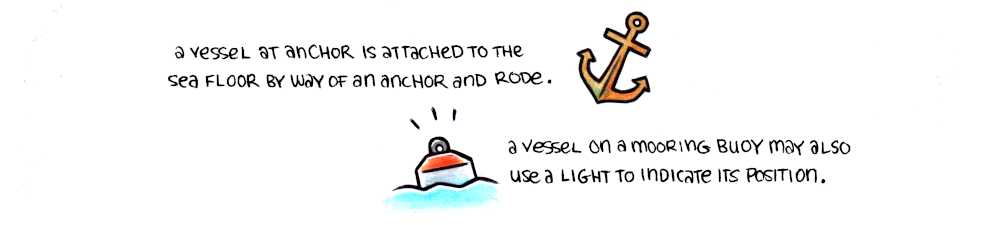
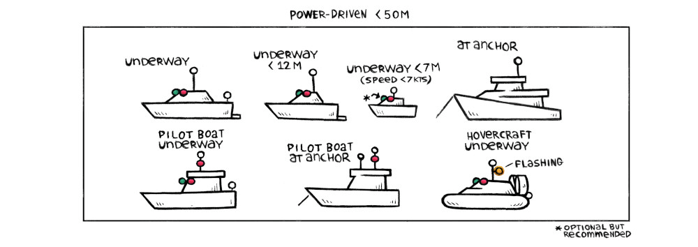
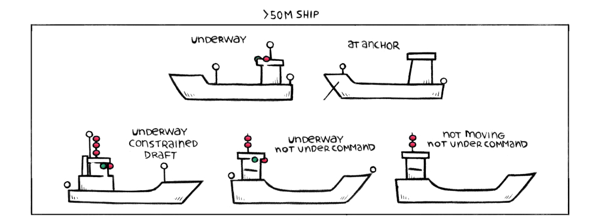
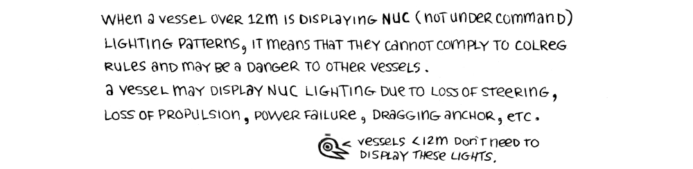
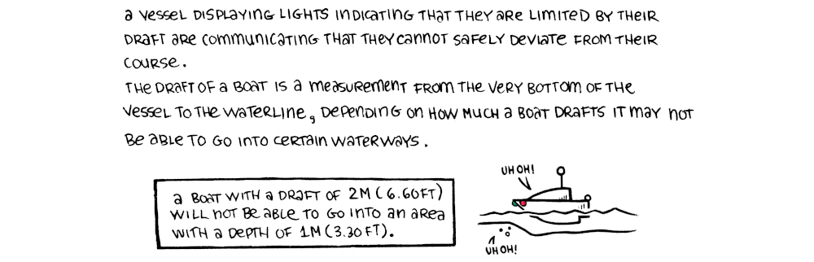
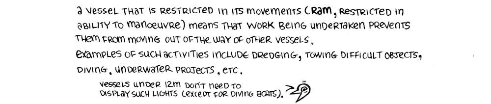

ColregsAt night, vessels indicate their status to other mariners by way of lights, the color and position of each light communicates different information.
The Colgre(collision regulations) communication standard was adopted as a convention of the international maritime organization in 1972, with the goal of preventing collisions at sea.
Different color and placement of lights can communicate the following information about a vessel:
Type of vessel, length of vessel, which direction the vessel is heading (if it is facing toward, sidelong or away from your vessel), special circumstances and whether the vessel is moving, or if it isn't.

To see how to communicate status during the day, see...
Day Shapes.

A few things to remember:
Under refers to a vessel that is moving, whether by sail or motor. It will always display red and green sidelights, indicating the heading of the vessel.
A vessel at anchor will display an all-around white light where it can best be best, larger vessels will display another white light plus additional deck lights.
A vessel under motor will display a steaming light, to differentiate it from a vessel moving under sail.
A yellow towing light indicates the stern of a towing vessel.
A single white light can be many different things: A stern light, an anchor light(for <50m vessels), a masthead light of a power vessel, the light of an <7m vessel, etc.


A vessel at anchor is attached to the sea floor by way of an anchor and rode.
A vessel on a mooring buoy may also use a light to indicate its position.

Pilot boats are small ships, operated by experienced harbour captains, that help guide larger ships in and out of ports.


When a vessel over 12 m is display NUC (not under command) lighting patterns, it means that they cannot comply to colreg rules and may be a danger to other vessels.
A vessel may display NUC lighting due to loss of steering, loss of propulsion, power failure, dragging anchor, etc.
As a side note, vessels <12 m don't need to display these lights.

A vessel displaying lights indicating that they are limited by their draft are communicating that they cannot safely deviate from their course. The draft of a boat is a measurement from the very bottom of the vessel to the waterline, depending on how much a boat drafts it may not be able to go into certain waterways.
A boat with a draft of 2m (6.60ft) will not be able to go into an area with a depth of 1m (3.30ft).
![navigation lights states for boats under 50m, one for a tow under 200m(tugboat has sidelights, 2 white lights high up, a yellow towing light at the back over the sternlight and the tow has sidelights and a sternlight) and another for tow over 200m(the tugboat has 3 white lights, sidelights, a yellow towing light overtop of a stern light and the towed object has sidelights and a sternlight). Another graphic showing navigation light configurations for tugboats towing inconspicuous objects, when the object being towed is under 200m(the tugboat has 2 white lights, sidelights, a yellow towing light overtop of a stern light and the towed object has a light at the bow and at the stern), and over 200m(the tugboat has 3 white lights, sidelights, a yellow towing light overtop of a stern light and the towed object has a light at the bow and at the stern), there are also different light states showing objects of different lengths, under 100m(the tugboat has 3 white lights, sidelights, a yellow towing light overtop of a stern light and the towed object has a light at the stern, at the bow and in the center), over 100m, and wider than 25m(the tugboat has 3 white lights, sidelights, a yellow towing light overtop of a stern light and the towed object has lights on the stern and bow and on both sides in the center). Another graphic shows tugboats towing other ships, either alongside(the tugboat has sidelights, a stern light and 2 lights overhead and is towing a barge alongside that is lit with sidelights and a stern light), by pushing(the tugboat has sidelights, a stern light and 2 lights overhead and is pushing a big ship from the stern that is lit with sidelights, a masthead light, a light at the bow and a stern light), or by pushing as a composite(in which the pushing boat and boat being pushed are considered to be one vessel, and are lit as such. The pushing vessel has a stern light and the vessel being pushed as a light at the bow, a masthead ight and sidelights).](../media/content/boatlights_towing.jpg)
![Graphics showing trawling vessels and their different navigation light states. Trawling boat under 50m, underway(a trawler lit with sidelights, a green light over a white light, and a stern light) and not moving(a trawler lit with a green light over a white light). Vessels over 50m not moving(a trawler lit with a green light over a white light, and a masthead light) and underwaya trawler lit with sidelights, a green light over a white light, a stern light and a masthead light). Fishing vessels with gear 150m to starboard, or port(red over white light, a white light in the direction of the fishing gear and sidelights and a sternlight-only when moving), and states for non-trawling fishing boats that are moving(a red light over a white and red light, a stern light, and sidelights) and not moving(red over white light).](../media/content/boatlights_trawling.jpg)
![Boats with navigation lights describing restricted movement, one showing a boat that is underway but limited in its movements(lights red, white and red, with sidelights, a masthead light and a stern light), another showing a tugboat towing something in a way that it is not able to change its route(red over white and red, higher are 2 additional white lights, then there are sidelights, and a yellow towing light over a stern light), a vessel engaged in underwater operations with obstacles to starboard(a boat with 3 lights ordered as red, white and red, a masthead light, 2 superimposed green lights indicating where it is safe for boats to pass and 2 superimposed red lights indicating the side with an obstruction), and a small diving boat under 7m(3 lights ordered as such: red, white and red again).](../media/content/boatlights_restricted.jpg)

A vessel that is restricted in its movements (RAM, restricted in ability to manoeuvre) means that work being undertaken prevents them from moving out of the way of other vessels.
Examples of such activities include dreding, towing difficult objects, diving, underwater projects, etc.
As a sidenote, vessels under 12 m don't need to display such lights (except for diving boats).